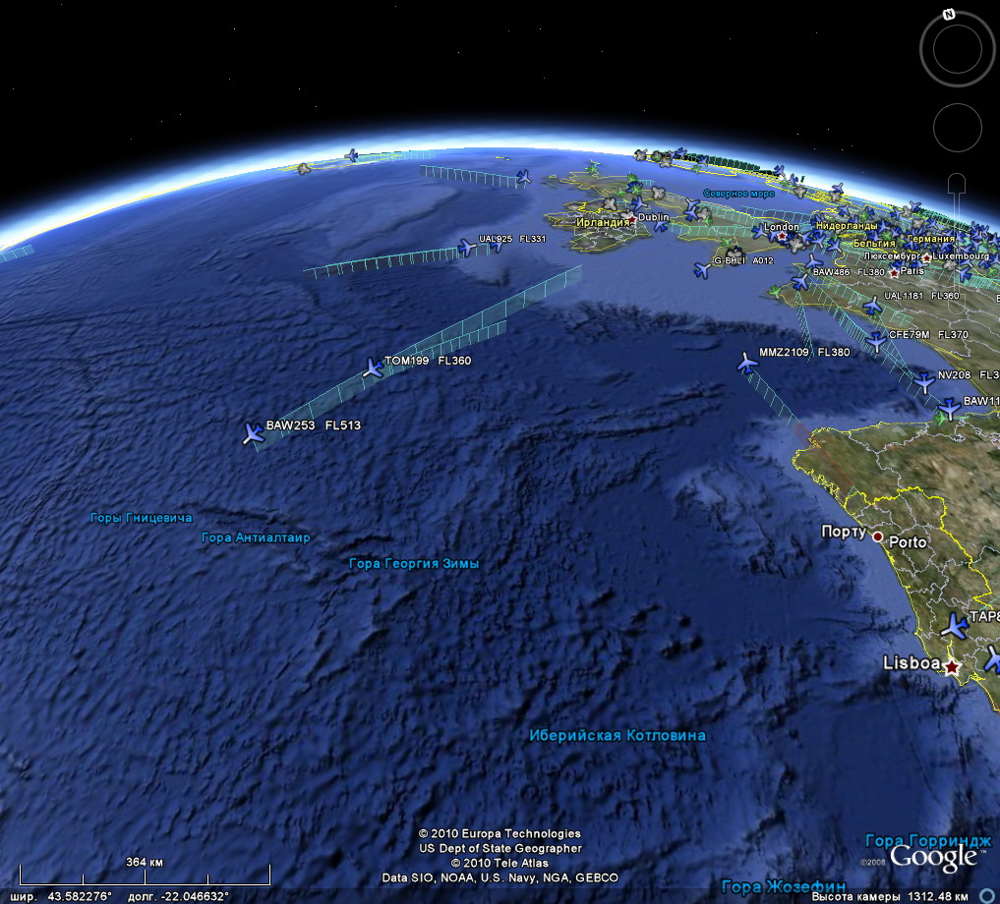

General overview of eastern atlantic airspace near Europe
- BAW253 and TOM199 are cruising in Caribbean direction, BAW253 is Concorde probably as it operates on FL513
- UAL925 and another one flight from North America have almost reached Ireland on same route
- A lot of flights in London, over Great Britain, over Germany etc
- MMZ2109 was offline for short while (red part of his track)
